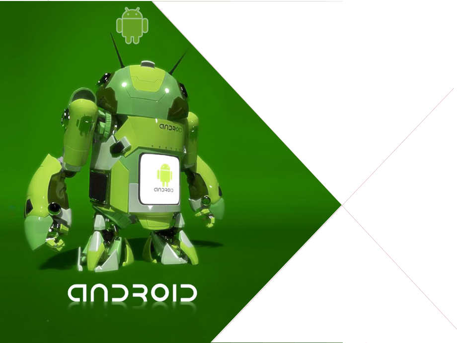

Jean-François GARREAU, Consultant IT SQLI

Enjeux
Les librairies à notre secours
Solutions possibles
Cas pratique
Liens


Perte de temps / Productivité / Standards / Open Source / Retro compatibilité

Un projet android
Accès à un Intent


Respect des standards
Permet de faire ce que l’on veut
Open Source
Souvent modulables

Gestion des versions
Gestion des conflits
Agrégation parfois compliquée
Poids de l’application pouvant grimper…
Complication de l’environement de développement
Gestion ActionBar
Remontée automatique de bugs
Accès aux fragments depuis 1.6
Navigation par pages facilitée
HoloEveryWhere, MapsV2, NavifationDrawer, Android Annotations, RoboGuice, ...
Parler des autres à l’oral

Android Bootstrap
Android KickStartR
DIY
Ultimate Android Library / Android ToolBox / Anrdoid UI Patterns
Dire que le dernier n’est plus dispo mais qu’on peut trouver l’apk sur le net
On fait du DIY car pour le moment ces solutions ne sont pas assez complètes…


On cherche un truc proche de Google pour assurer la maintenance
On fait ça pour gérer au mieux les dépendances et donc éviter les doublons !
Maven :
Pas de Maven :
Gradle :
Gradle peut être une bonne nouvelle alternative. Je penses choisir ça prochainement Aujourd’hui tout évolue vite.

Pour navigation drawer, les fragments sont au coeurs du mécanisme

Config Application + options /!\ à la configuration serveur ! Install de couchDB etc… ou backend appengine

Est à la source de tous les problèmes tout en étant notre sauveur.
HoloEveryWhere -> ActionBarSherlock
Le thème doit hériter de Holo

ViewPager -> HoloEveryWhere
BreizhCamp -> ViewPager
Utilisation simple du titleIndicator

commons.io-1.3.2 / commons.lang3-3.1 / jackson-code-asl-1.9.11 / jackson-mapper-asl-1.9.11
/ spring-android-core-1.0.1.RELEASE / spring-android-rest-template-1.0.1.RELEASE
/ robospice-1.4.4 / robospice-cache-1.4.4 / robospice-spring-android-1.4.4
Basé sur les services
gson 2.2.4
Basé sur un Looper avec une queue de request
Pourquoi pas Volley ? à cause de la gestion avec un looper. Va l’emporter à terme

guice-3.0-no_aop javax.inject-1 roboguice-2.0
Pb d’intégration avec ABS ! Obliger de recréer les classes ! Sinon alternatives peuvent poser des soucis ! _ pour androidannotations… as t-on besoin d’une injection forte… ?

Api Console
Paramétrage d'une clé de hashage !
/!\ si plusieurs cartes ! dans des fragments ⇒ pas d’instanciation depuis le XML !!
Attente en natif du BitmapUrlCache ! car nécessite un helper
ABS est au cours des problèmes mais est indispensable
Maps : Utilisation de getChildFragmentManager, on ne peut pas intégrer par le XML dans ce cas !
AndroidBootStrap AndroidKickStartR
Pouvoir récupérer les dernières évolutions Pouvoir gérer sans interférences dans son projet les merges

Les librairies sont nos amies

Oui mais…
Attention à l’intégration !
Important d’intentifier son besoin !
Important de connaître les parades d’intégration !
Le poids n’est pas un problème ! progard à la rescousse.

@gdgnantes / @binomed